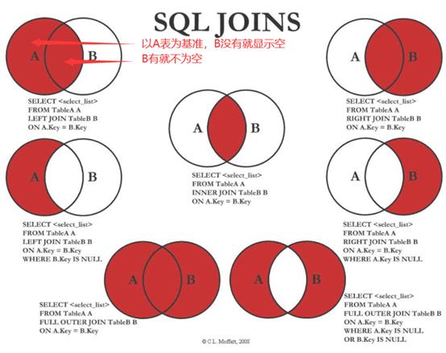

MySQL的联结（Join）算法
笛卡尔积
所有的广义内连接的核心和共同点是完全基于笛卡尔积原理的，两个表进行笛卡尔积运算得到的结果表是由第一个表的每一行与第二个表的每一行拼接后形成的表，称为‘笛卡尔积表’，结果表的行数等于两个表的行数之积。如：
1 | SELECT * from 表1 [CROSS] JOIN 表2； |
这里没有任何限制和条件，这种联结称为交叉连接，得到的结果就是两个表的笛卡尔积，所有广义内连接在原理上都是通过在笛卡尔积的基础上进行过滤得到的。
内连接（等值连接）
我们要在笛卡尔积的基础上进行过滤了，以选择我们需要的记录（行）
1 | -- 写法1：显式内连接，通过ON进行过滤 |
注意这里的条件是等值条件，一般类似 表1.字段1=表2.字段2 这种（字段就是列），所以内连接又称为等值连接。内连接允许条件不是等值的，那就不是等值连接就是一般的内连接了。不过我们一般都用等值连接。内连接也允许没有等值条件，如果没有 ON 的话此时就等同于交叉联结CROSS JOIN。
自然连接
上述内连接是对行进行过滤，对列进行过滤的话就是自然连接，自然连接要求你只能选择那些唯一的列，一般通过对一个表使用通配符（SELECT *），而对其他表的列使用明确的子集来完成：
1 | -- 写法1 |
但一般我们是既对行进行过滤也对列进行过滤，事实上，我们几乎使用的每个内连接都是自然连接，很可能永远都不会用到不是自然连接的内连接，即它们两个是搭配使用的：
1 | -- 写法1 |
在MySQL中有提供实现的自然连接（NATURAL JOIN），注意这里的自然连接跟我们上面说的有那么一点点不同，NATURAL JOIN等同于INNTER JOIN与USING的组合，它隐含的作用是将两个表中具有相同名称的列进行匹配，前提是两个表必须含有相同名字的列，然后我们可以省略ON条件，例如：
1 | SELECT * from 表1 NATURAL JOIN 表2; |
自连接
自连接顾名思义就是自己跟自己连接，说白了他本质上还是一种特殊的自己跟自己的交叉连接，自连接的实现必须借助给表起别名，如果不用别名就会报错，因为要多次调用同一个表：
1 | -- 写法1，AS t1为起别名操作，注意也可以省略AS，直接t1即可 |
但一般我们不这么用，与前面类似，自连接的使用一般搭配内连接和自然连接：
1 | -- 写法1 |
外连接
之前我们提到所有的广义内连接是完全基于笛卡尔积的，即所有广义内连接的结果都能在笛卡尔积表里找到，内连接将一个表中的行与另一个表中的行相关联，但有时候需要包含没有关联行的那些行，这些行在是笛卡尔积中是不存在的，这时就要用到外连接了，即外连接不是完全基于笛卡尔积的。
左外连接
返回包括左表中的所有记录和右表中连接字段相等的记录。这个要求笛卡尔积表并不能满足。例如有两个表如下：
1 | 员工表： |
假设这么一种情况，王五刚入职，还没有分配部门，这时领导要求查询所有员工的信息及所在的部门信息，包括未分配部门的员工。那这个要求在笛卡尔积表里能找到吗？
我们试一下内连接：
1 | mysql> SELECT * FROM emp [INNER] JOIN dep ON emp.`员工ID` = dep.`部门ID`; |
好像不行，并不包括王五的记录啊，那我们看一下笛卡尔表里都有什么：
1 | mysql> SELECT * FROM emp [INNER] JOIN dep; |
我们发现笛卡尔积表里并没有符合要求的记录，此时就要用到外连接了：
1 | mysql> SELECT * FROM emp LEFT [OUTER] JOIN dep ON emp.`员工ID` = dep.`部门ID`; |
我们可以看到王五那条记录在笛卡尔积表是不存在的，这也是我们所说的外连接不是完全基于笛卡尔积的，左外连接会返回包括左表中的所有记录和右表中连接字段相等的记录（可以理解成外连接比内连接的记录更多，多了一边为null的记录）。
这存在一个隐式的条件，外连接可以没有条件吗？我们知道内连接没有条件会变成交叉连接，答案是外连接必须存在等值条件，不然这种连接就跟外连接的定义相违背，SQL也会报错。但是我们可以给一个恒为true的条件，这时外连接是否会就退化成内连接了。
1 | SELECT * FROM 表1 LEFT [OUTER] JOIN 表2 ON 1=1; |
或者我们用逻辑查询处理的思路分析一下上面这种特殊情况，首先从from开始生成两个表的笛卡尔积，然后ON过滤，这里条件始终为true没有执行任何过滤，笛卡尔积中的所有记录都保留下来，然后到join中添加外部行，因为左边的边的记录都在，所以不需要添加外部行，所以这时就是笛卡尔积。
右外连接
跟左外连接原理完全相同，只不过返回包括右表中的所有记录和左表中连接字段相等的记录。其实掌握一个就行，左外连接中两个表互换位置就是右外连接了。语法：
1 | SELECT * from RIGHT [OUTER] JOIN 表2 ON 等值条件； |
全外连接
返回左右表中所有的记录和左右表中连接字段相等的记录。
语法：
1 | SELECT * from FULL [OUTER] JOIN 表2 ON 等值条件； |
注意：FULL OUTER JOIN的支持： Access、MariaDB、MySQL、Open Office Base和SQLite不支持FULL OUTER JOIN语法

联结算法
联接算法是MySQL数据库用于处理联接的物理策略。目前MySQL数据库仅支持Nested-Loops Join算法，这里只简单介绍一下这个联结算法。Nested-Loops Join算法有三种，分别为：
Index Nested-Loop Join
Simple Nested-Loops Join算法
Block Nested-Loops Join算法
Index Nested-Loop Join
当被驱动表有索引的时候，联结查询的执行过程是：
先遍历表t1，然后根据从表t1中取出的每行数据中的a值，去表t2中查找满足条件的记录。在形式上，这个过程就跟我们写程序时的嵌套查询类似，并且可以用上被驱动表的索引，所以我们称之为“Index Nested-Loop Join”，简称NLJ。假设在t2表上有a的索引，那么这里t1驱动表是走全表扫描，而被驱动表是走树搜索。 从这里的驱动表和被驱动表的查询过程可以看出，可以使用被驱动表的索引的前提下，使用join时将体量较小的小表作为驱动表
Simple Nested-Loop Join
当被驱动表用不上索引的时候，那么拿到了表1的行数据之后需要在被驱动表上做一次全表扫描。如果两个表都是使用的全表扫描的话，那么扫描的行数就是两个表行数之积。算法太过于笨重，MySQL也没有使用这个Simple Nested-Loop Join算法。而是使用了另一个叫作“Block Nested-Loop Join”的算法，简称BNL。
Block Nested-Loop Join
这时候，被驱动表上没有可用的索引，算法的流程是这样的：
- 把表t1的数据读入线程内存join_buffer中，由于我们这个语句中写的是select *，因此是把整个表t1放入了内存；
- 扫描表t2，把表t2中的每一行取出来，跟join_buffer中的数据做对比，满足join条件的，作为结果集的一部分返回。
在这个过程中，对表t1和t2都做了一次全表扫描，由于join_buffer是以无序数组的方式组织的，因此对表t2中的每一行都需要做比对判断。但是，Block Nested-Loop Join算法的判断都是内存操作，速度上会快很多，性能也更好。这个时候任何一个表作为驱动表和被驱动表耗时都是一样的。
在实际过程中如果join_buffer放不下一整个表的数据，就分段放满然后使用被驱动表做匹配，匹配完之后就清空join_buffer继续读驱动表的数据。这也是这个算法名字“Block”的由来：表示“分块去join”。但是在join_buffer_size不够大的时候（这种情况更常见），应该选择小表做驱动表。这样尽可能让join_buffer一次性就加载完驱动表这样被驱动表就不用重复去匹配。
这里的小表定义规则是：在决定哪个表做驱动表的时候，应该是两个表按照各自的条件过滤，过滤完成之后，计算参与join的各个字段的总数据量，数据量小的那个表，就是“小表”，应该作为驱动表。
集合操作
- 与联接操作一样，集合操作也是对两个输入进行操作，并生成一个虚拟表，有点类似于数学中的合并；
- 集合操作的两个输入必须拥有相同的列数，若数据类型不同，MySQL数据库会自动将进行隐式转化，并且结果列的名称由第一个输入决定；
- 若SELECT语句中包含LIMIT和ORDER BY子句，要为参与集合操作的各SELECT语句添加括号，否则执行集合查询会产生错误。
例如：
1 | mysql> select * from x; |
UNION [DISTINCT]
UNION DISTINCT组合两个输入，并应用DISTINCT过滤重复项。一般省略DISTINCT关键字，直接用UNION，例如
1 | mysql> select * from x |
MySQL数据库目前对UNION DISTINCT的实现方式如下：
- 创建一张临时表，即虚拟表。
- 对这张临时表的列添加唯一索引（Unique Index）。
- 将输入的数据插入临时表。
- 返回虚拟表。
UNION ALL
UNION ALL组合两个输入中所有项的结果集，并包含重复的选项，例如：
1 | mysql> select * from x |